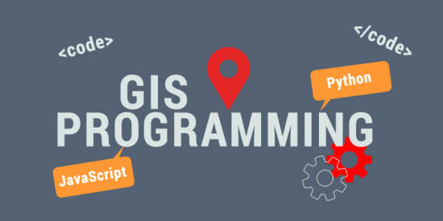

GIS and programming are two powerful tools in the modern world, and combining both of them can be a great way to get more out of the data you have. Web GIS programming involves creating, extending, utilizing, Web GIS or web mapping solutions to solve specific problems, build complete applications, or consume or produce data and geospatial processing services. With the expansion of the internet and availability of Web GIS or Web mapping options, web GIS programming is becoming a commonly required skill set in many organizations.

If you’re going to be working as a GIS software developer, you’re pretty much going to be a software developer with a concentration in GIS
Programmers need to be focused because you’re going to be writing, examining, and error-checking code. GIS developers need to learn fast on their feet. GIS programming skills like learning Python, .NET, and C++ are essential. Alternatively, you could be building web applications using JavaScript, HTML, and CSS. There is also potential to design geospatial applications for field collection, reporting, and other GIS-related activities.